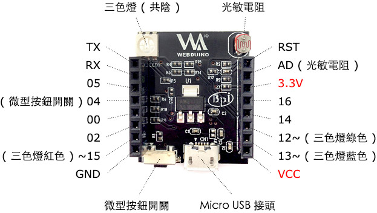
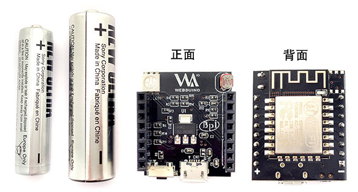
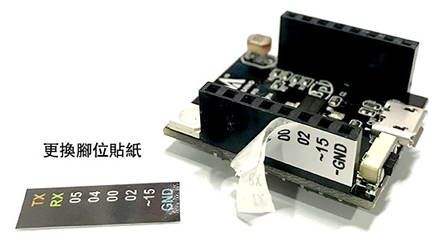

Webduino Smart ( 雲端開發板 )
Webduino Smart 是 2016 年推出的物聯網開發板，有別於過去馬克 1 號和 Fly 需要搭配 Arduino 才能運作，Smart 可以自行獨立運作，同時也具備連上網際網路 ( Internet ) 和透過區域網路 ( WebSocket ) 操控的能力，相信更能有效地應用在物聯網的開發和各種創意上！
售價：
產品說明：
Webduino Smart 是一塊長 3 公分寬 2.5 公分的開發板，重量約 85 公克，腳位有數位腳 0、2、4、5、14、16，PWM 腳位 12、13、15，類比腳 AD ( A0 )，其他腳位 TX、RX、3.3V、VCC、RST 和 GND 各 1 個。
預設元件和腳位介紹：

初次使用必看：
實作 Webduino Smart 之前，最重要的就是進行初始化設定，初始化設定的目的在於讓 Webduino 開發板可以自動上網 ( Internet )，或是在區域網路透過 WebSocket 連線，有了初始化設定，我們也能夠自訂開發板的顯示名稱和密碼，更可以連上 internet 進行遠端更新。
1. Webduino Smart 初始化設定：https://webduino.io/tutorials/smart-02-setup.html
2. 認識 Webduino Smart：https://webduino.io/tutorials/smart-01-information.html
大小對照 ( 左邊是四號電池和三號電池 )：

360 度照片：

更換腳位貼紙：
若覺得原本貼在 Smart 開發板上的貼紙比較不好看，可更換包裝內的腳位貼紙，腳位貼紙分為「左邊外側 L in」、「左邊內側 L out」、「右邊內側 R in」和「右邊外側 R out」，左右邊的識別以 Smart 的 Webduino Logo 朝上做左右邊區分，使用者可自行用剪刀剪開後黏貼。

若要更換貼紙，只需撕下原本的白色腳位貼紙，再將新的黑色貼紙貼上即可，千萬要注意左右邊、內外側不要貼錯了！
